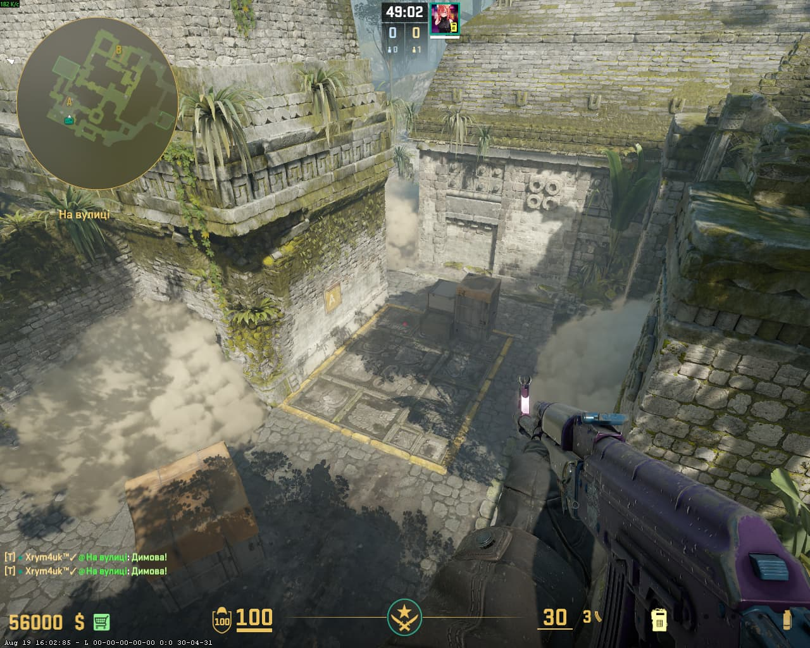
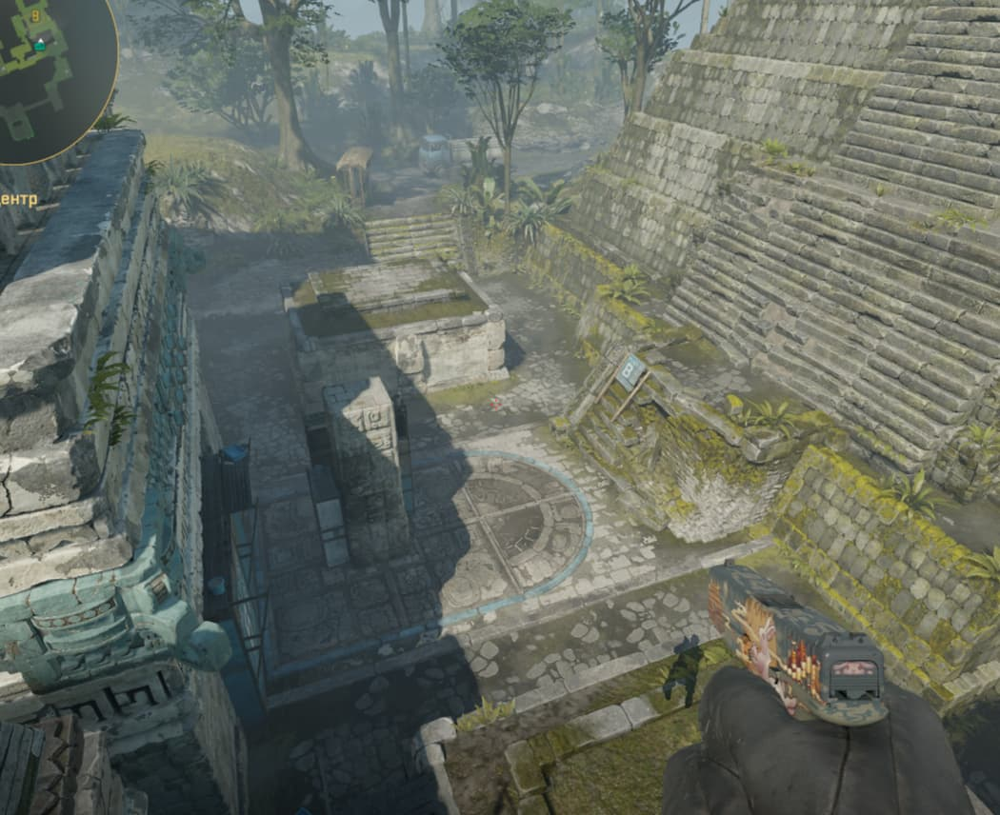
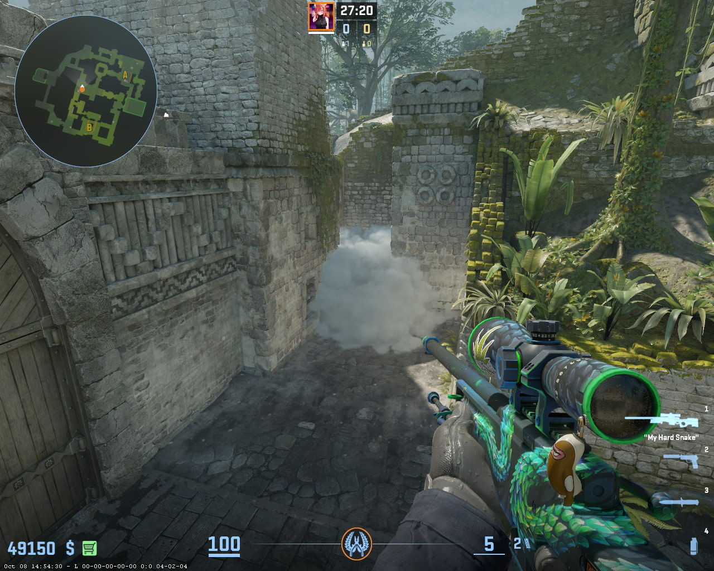

← НАЗАД
ANCIENT — CT ТАКТИКИ 🛡️
📍
Порада для телефонів:
Щоб бачити сторінку точно так само, як на комп'ютері, відкрий меню браузера (3 крапки) та постав галочку «Версія для комп'ютера».
🔒 Скоро

🛡️ A Site
🔒 Скоро

🕳️ Cave

⚔️ Mid
🔒 Скоро
💣 B Site